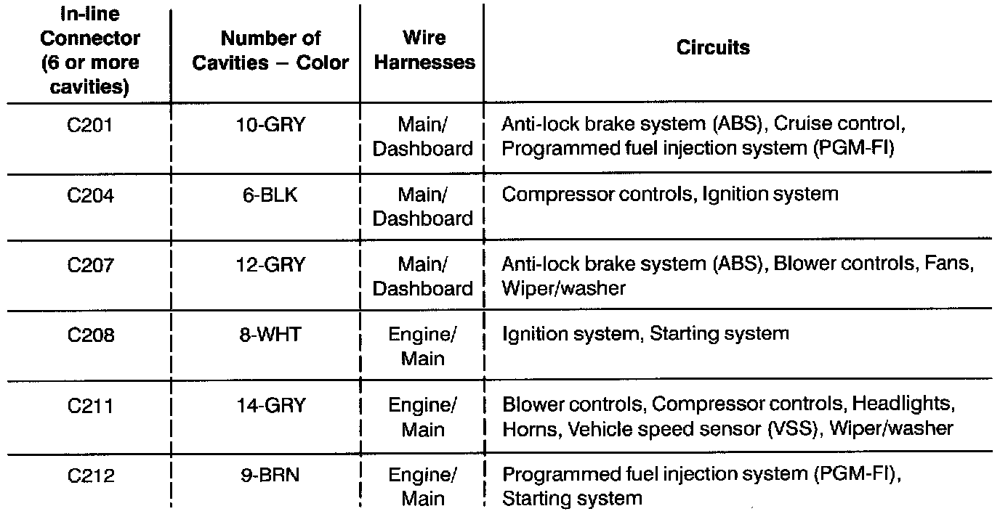

How to Use
In-Line-Connector Circuit Identification:

Use this chart to help diagnose multiple symptoms in separate circuits which could be caused by a single problem in a connector shared by those circuits.
1. Pick one of the multiple symptoms and look up the schematic for that circuit.
2. Make a list of all in-line-connectors in that schematic.
3. Then, in this chart, look up each connector on your list to see if circuits related to the other symptoms run through one of them. If they do, inspect that connector for the problem.
Example: The horn, A/C, and the right headlight don't work. List all in-line-connectors in the horn circuit and check this chart. You find that C211 is common to the A/C circuit and the headlight circuit, so you inspect C211 and find the problem: bent terminals.